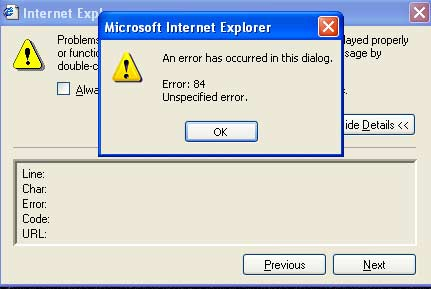
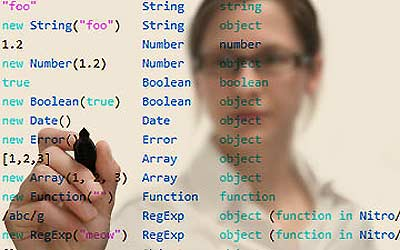

JavaScript的诞生
JavaScript 的诞生
JavaScript 的历史
- 它最初由 Netscape(网景公司) 的 Brendan Eich 设计。JavaScript 是甲骨文公司的注册商标。Ecma【欧洲计算机制造商协会（European Computer Manufacturers Association）】 国际以 JavaScript 为基础制定了 ECMAScript 标准。JavaScript 也可以用于其他场合，如服务器端编程。完整的 JavaScript 实现包含三个部分：ECMAScript，文档对象模型，浏览器对象模型。
- Netscape 在最初将其脚本语言命名为 LiveScript，后来 Netscape 在与 Sun 合作之后将其改名为 JavaScript。JavaScript 最初受 Java 启发而开始设计的，目的之一就是“看上去像 Java”，因此语法上有类似之处，一些名称和命名规范也借自 Java。
- 但 JavaScript 的主要设计原则源自 Self 和 Scheme。
- JavaScript 与 Java 名称上的近似，是当时 Netscape 为了营销考虑与 Sun 微系统达成协议的结果。
- 为了取得技术优势，微软推出了 JScript 来迎战 JavaScript 的脚本语言。为了互用性，Ecma 国际（前身为欧洲计算机制造商协会）创建了 ECMA-262 标准（ECMAScript）。两者都属于 ECMAScript 的实现。
- 尽管 JavaScript 作为给非程序人员的脚本语言，而非作为给程序人员的脚本语言来推广和宣传，但是 JavaScript 具有非常丰富的特性。
- 发展初期，JavaScript 的标准并未确定，同期有 Netscape 的 JavaScript，微软的 JScript 和 CEnvi 的 ScriptEase 三足鼎立。1997 年，在 ECMA（欧洲计算机制造商协会）的协调下，由 Netscape、Sun、微软、Borland 组成的工作组确定统一标准：ECMA-262。
JavaScript 诞生记
以下内容引用自《阮一峰的网络日志》
1.“1994 年，网景公司（Netscape）发布了 Navigator 浏览器 0.9 版。这是历史上第一个比较成熟的网络浏览器，轰动一时。但是，这个版本的浏览器只能用来浏览，不具备与访问者互动的能力。……网景公司急需一种网页脚本语言，使得浏览器可以与网页互动。”
2.网页脚本语言到底是什么语言？网景公司当时有两个选择：一个是采用现有的语言，比如 Perl、Python、Tcl、Scheme 等等，允许它们直接嵌入网页；另一个是发明一种全新的语言。
这两个选择各有利弊。第一个选择，有利于充分利用现有代码和程序员资源，推广起来比较容易；第二个选择，有利于开发出完全适用的语言，实现起来比较容易。
到底采用哪一个选择，网景公司内部争执不下，管理层一时难以下定决心。
3.就在这时，发生了另外一件大事：1995 年 Sun 公司将 Oak 语言改名为 Java，正式向市场推出。
Sun 公司大肆宣传，许诺这种语言可以”一次编写，到处运行”（Write Once, Run Anywhere），它看上去很可能成为未来的主宰。
网景公司动了心，决定与 Sun 公司结成联盟。它不仅允许 Java 程序以 applet（小程序）的形式，直接在浏览器中运行；甚至还考虑直接将 Java 作为脚本语言嵌入网页，只是因为这样会使 HTML 网页过于复杂，后来才不得不放弃。
总之，当时的形势就是，网景公司的整个管理层，都是 Java 语言的信徒，Sun 公司完全介入网页脚本语言的决策。因此，Javascript 后来就是网景和 Sun 两家公司一起携手推向市场的，这种语言被命名为”Java+script”并不是偶然的。
4.此时，34 岁的系统程序员 Brendan Eich 登场了。1995 年 4 月，网景公司录用了他。
Brendan Eich 的主要方向和兴趣是函数式编程，网景公司招聘他的目的，是研究将 Scheme 语言作为网页脚本语言的可能性。Brendan Eich 本人也是这样想的，以为进入新公司后，会主要与 Scheme 语言打交道。
仅仅一个月之后，1995 年 5 月，网景公司做出决策，未来的网页脚本语言必须”看上去与 Java 足够相似”，但是比 Java 简单，使得非专业的网页作者也能很快上手。这个决策实际上将 Perl、Python、Tcl、Scheme 等非面向对象编程的语言都排除在外了。
Brendan Eich 被指定为这种”简化版 Java 语言”的设计师。
5.但是，他对 Java 一点兴趣也没有。为了应付公司安排的任务，他只用 10 天时间就把 Javascript 设计出来了。
由于设计时间太短，语言的一些细节考虑得不够严谨，导致后来很长一段时间，Javascript 写出来的程序混乱不堪。如果 Brendan Eich 预见到，未来这种语言会成为互联网第一大语言，全世界有几百万学习者，他会不会多花一点时间呢？
总的来说，他的设计思路是这样的：
- 借鉴 C 语言的基本语法；
- 借鉴 Java 语言的数据类型和内存管理；
- 借鉴 Scheme 语言，将函数提升到”第一等公民”（first class）的地位；
- 借鉴 Self 语言，使用基于原型（prototype）的继承机制。 所以，Javascript 语言实际上是两种语言风格的混合产物—-（简化的）函数式编程+（简化的）面向对象编程。这是由 Brendan Eich（函数式编程）与网景公司（面向对象编程）共同决定的。
6.多年以后，Brendan Eich 还是看不起 Java。
他说：
“Java（对 Javascript）的影响，主要是把数据分成基本类型（primitive）和对象类型（object）两种，比如字符串和字符串对象，以及引入了 Y2K 问题。这真是不幸啊。”
把基本数据类型包装成对象，这样做是否可取，这里暂且不论。Y2K 问题则是直接与 Java 有关。根据设想，Date.getYear()返回的应该是年份的最后两位：
var date1 = new Date(1999, 0, 1);
var year1 = date1.getYear();
alert(year1); // 99
但是实际上：
var date2 = new Date(2000, 0, 1);
var year2 = date2.getYear();
alert(year2); // 100
如果用这个函数生成年份，某些网页可能出现”19100”这样的结果。这个问题完全来源于 Java，因为 Javascript 的日期类直接采用了 java.util.Date 函数库。Brendan Eich 显然很不满意这个结果，这导致后来不得不添加了一个返回四位数年份的 Date.getFullYear()函数。
如果不是公司的决策，Brendan Eich 绝不可能把 Java 作为 Javascript 设计的原型。作为设计者，他一点也不喜欢自己的这个作品：
“与其说我爱 Javascript，不如说我恨它。它是 C 语言和 Self 语言一夜情的产物。十八世纪英国文学家约翰逊博士说得好：’它的优秀之处并非原创，它的原创之处并不优秀。’（the part that is good is not original, and the part that is original is not good.）”
以上内容引用自《阮一峰的网络日志》
JavaScript 的 10 个设计缺陷
以下内容引用自《阮一峰的网络日志》
前几篇文章，我经常说 Javascript 的设计不够严谨，有很多失误。
今天的这一篇，前半部分就谈为什么会这样，后半部分将列举 Javascript 的 10 个设计缺陷。
我参考的文献主要是 Douglas Crockford 的专著《Javascript 语言精粹》（JavaScript: The Good Parts）和 Fredrik Holmström 的文章《我对 Javascript 的抱怨》（My gripes with Javascript）。
 ;
;
一、为什么 Javascript 有设计缺陷？
这里有三个客观原因，导致 Javascript 的设计不够完善。
;
设计阶段过于仓促:
- Javascript 的设计，其实只用了十天。而且，设计师是为了向公司交差，本人并不愿意这样设计（参见《Javascript 诞生记》）。
- 另一方面，这种语言的设计初衷，是为了解决一些简单的网页互动（比如，检查”用户名”是否填写），并没有考虑复杂应用的需要。设计者做梦也想不到，Javascript 将来可以写出像 Gmail 这种极其庞大复杂的网页。
没有先例
- Javascript 同时结合了函数式编程和面向对象编程的特点，这很可能是历史上的第一例。而且直到今天为止，Javascript 仍然是世界上唯一使用 Prototype 继承模型的主要语言。这使得它没有设计先例可以参考。
过早的标准化
- Javascript 的发展非常快，根本没有时间调整设计。
- 1995 年 5 月，设计方案定稿；10 月，解释器开发成功；12 月，向市场推出，立刻被广泛接受，全世界的用户大量使用。Javascript 缺乏一个从小到大、慢慢积累用户的过程，而是连续的爆炸式扩散增长。大量的既成网页和业余网页设计者的参与，使得调整语言规格困难重重。
更糟的是，Javascript 的规格还 s 没来及调整，就固化了。
1996 年 8 月，微软公司强势介入，宣布推出自己的脚本语言 Jscript；11 月，为了压制微软，网景公司决定申请 Javascript 的国际标准；1997 年 6 月，第一个国际标准 ECMA-262 正式颁布。
也就是说，Javascript 推出一年半之后，国际标准就问世了。设计缺陷还没有充分暴露就成了标准。相比之下，C 语言问世将近 20 年之后，国际标准才颁布。
二、Javascript 的 10 个设计缺陷

不适合开发大型程序
- Javascript 没有名称空间（namespace），很难模块化；没有如何将代码分布在多个文件的规范；允许同名函数的重复定义，后面的定义可以覆盖前面的定义，很不利于模块化加载。
非常小的标准库
- Javascript 提供的标准函数库非常小，只能完成一些基本操作，很多功能都不具备。
null 和 undefined
null 属于对象（object）的一种，意思是该对象为空；undefined 则是一种数据类型，表示未定义。
两者非常容易混淆，但是含义完全不同。
typeof null; // object typeof undefined; // undefinedvar foo; alert(foo == null); // true alert(foo == undefined); // true alert(foo === null); // false alert(foo === undefined); // true在编程实践中，null 几乎没用，根本不应该设计它。
全局变量难以控制
Javascript 的全局变量，在所有模块中都是可见的；任何一个函数内部都可以生成全局变量，这大大加剧了程序的复杂性。
a = 1; (function() { b = 2; alert(a); })(); // 1 alert(b); //2
自动插入行尾分号
- Javascript 的所有语句，都必须以分号结尾。但是，如果你忘记加分号，解释器并不报错，而是为你自动加上分号。有时候，这会导致一些难以发现的错误。
比如，下面这个函数根本无法达到预期的结果，返回值不是一个对象，而是 undefined。
function(){ return { i=1 }; }原因是解释器自动在 return 语句后面加上了分号。
function(){ return; { i=1 }; }
加号运算符
+号作为运算符，有两个含义，可以表示数字与数字的和，也可以表示字符与字符的连接。
alert(1 + 10); // 11 alert("1" + "10"); // 110如果一个操作项是字符，另一个操作项是数字，则数字自动转化为字符。
alert(1 + "10"); // 110 alert("10" + 1); // 101这样的设计，不必要地加剧了运算的复杂性，完全可以另行设置一个字符连接的运算符。
NaN
NaN 是一种数字，表示超出了解释器的极限。它有一些很奇怪的特性：
NaN === NaN; //false NaN !== NaN; //true alert(1 + NaN); // NaN与其设计 NaN，不如解释器直接报错，反而有利于简化程序。
数组和对象的区分
由于 Javascript 的数组也属于对象（object），所以要区分一个对象到底是不是数组，相当麻烦。Douglas Crockford 的代码是这样的：
if ( arr && typeof arr === "object" && typeof arr.length === "number" && !arr.propertyIsEnumerable("length") ) { alert("arr is an array"); }
== 和 ===
==用来判断两个值是否相等。当两个值类型不同时，会发生自动转换，得到的结果非常不符合直觉。
"" == "0"; // false 0 == ""; // true 0 == "0"; // true false == "false"; // false false == "0"; // true false == undefined; // false false == null; // false null == undefined; // true " \t\r\n" == 0; // true因此，推荐任何时候都使用”===“（精确判断）比较符。
基本类型的包装对象
Javascript 有三种基本数据类型：字符串、数字和布尔值。它们都有相应的建构函数，可以生成字符串对象、数字对象和布尔值对象。
new Boolean(false); new Number(1234); new String("Hello World");与基本数据类型对应的对象类型，作用很小，造成的混淆却很大。
alert( typeof 1234); // number alert( typeof new Number(1234)); // object关于 Javascript 的更多怪异行为，请参见 Javascript Garden 和 wtfjs.com。
三、如何看待 Javascript 的设计缺陷？
既然 Javascript 有缺陷，数量还不少，那么它是不是一种很糟糕的语言？有没有前途？
回答是 Javascript 并不算糟糕，相反它的编程能力很强大，前途很光明。
首先，如果遵守良好的编程规范，加上第三方函数库的帮助，Javascript 的这些缺陷大部分可以回避。
其次，Javascript 目前是网页编程的唯一语言，只要互联网继续发展，它就必然一起发展。目前，许多新项目大大扩展了它的用途，node.js 使得 Javascript 可以用于后端的服务器编程，coffeeScript 使你可以用 python 和 ruby 的语法，撰写 Javascript。
最后，只要发布新版本的语言标准（比如 ECMAscript 5），就可以弥补这些设计缺陷。当然，标准的发布和标准的实现是两回事，上述的很多缺陷也许会一直伴随到 Javascript 存在的最后一天。
（完）
–以上内容引用自《阮一峰的网络日志》